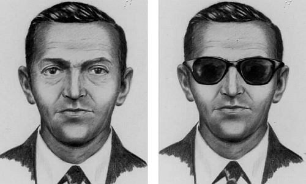

D.B. Cooper
Pacific Northwest, USA — November 1971

The Event
On the eve of Thanksgiving, a man identifying as "Dan Cooper" hijacked Northwest Orient Flight 305. He demanded $200,000 in cash and four parachutes. Somewhere over the rugged wilderness of Washington State, he lowered the rear stairs and leapt into a freezing thunderstorm, vanishing from history.
Evidence Locker


Current Theories
The Archive presents these possibilities as the limits of modern forensic understanding.
- The Survival Impossibility Cooper jumped into -70 degree wind chill with no survival gear. Experts suggest he died on impact.
- The Hidden Life No body or parachute was ever found. Theories suggest he survived and lived under a pseudonym for decades.
- Inside Knowledge His specific knowledge of the Boeing 727's aft stairs suggests he may have had military or aerospace training.